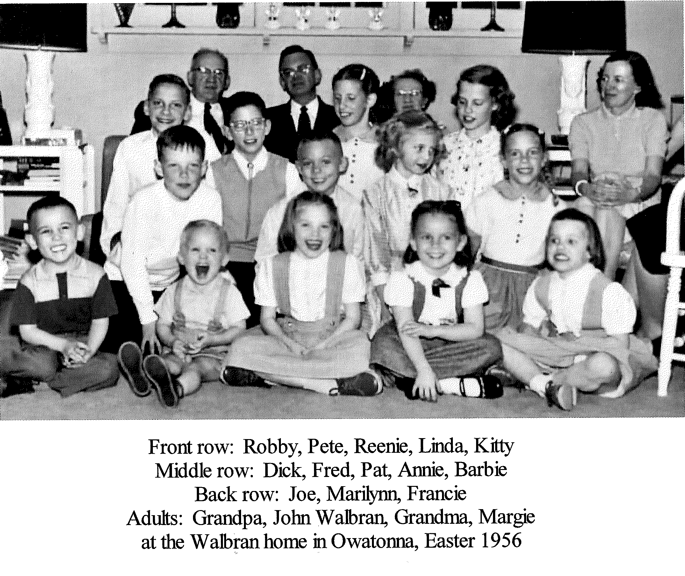

Foreword
 We are the nineteen grandchildren of Joseph N. Moonan and Ethel Klug Moonan. Our birth years range from 1939 and 1961, and our residences range from Connecticut to Oregon. We share countless fond memories of childhood hours spent at our grandparents' home, the big brick house at 610 North State Street, in Waseca, Minnesota.
Upon the sale in 2011 of our grandparents' home to non-Moonans for only the second time in its 95-year history, we decided to collect some of our photos and nostalgic memories of the house. When the house left the Moonan family for the first time, in 1964, the oldest of us was not yet old enough to be nostalgic, and the youngest was not yet old enough to form memories.